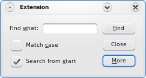
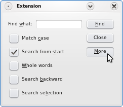

Extension Example
The Extension example shows how to add an extension to a QDialog using the QAbstractButton::toggled() signal and the QWidget::setVisible() slot.

The Extension application lets the user add search parameters in a dialog and launch a simple or advanced search.
The simple search has two options: Match case and Search from start. The advanced search offers search for Whole words, Search backward, and Search selection. The application starts with simple search as the default. Click the More button to show the advanced search options:

FindDialog Class Definition
The FindDialog class inherits QDialog. QDialog is the base class for dialog windows. A dialog window is a top-level window mostly used for short-term tasks and brief communications with the user.
class FindDialog : public QDialog { Q_OBJECT public: FindDialog(QWidget *parent = 0); private: QLabel *label; QLineEdit *lineEdit; QCheckBox *caseCheckBox; QCheckBox *fromStartCheckBox; QCheckBox *wholeWordsCheckBox; QCheckBox *searchSelectionCheckBox; QCheckBox *backwardCheckBox; QDialogButtonBox *buttonBox; QPushButton *findButton; QPushButton *moreButton; QWidget *extension; };
The FindDialog widget is the main application widget, and displays the application's search options and controlling buttons.
In addition to the constructor, there are several child widgets:
- A QLineEdit with an associated QLabel to let the user type a word to search for.
- Several QCheckBoxes to facilitate the search options.
- Three QPushButtons:
- the Find button to start a search
- the More button to enable an advanced search
- a QWidget representing the application's extension part
FindDialog Class Implementation
Create the standard child widgets for the simple search in the constructor: the QLineEdit with the associated QLabel, two {QCheckBox}es and all the QPushButtons.
FindDialog::FindDialog(QWidget *parent) : QDialog(parent) { label = new QLabel(tr("Find &what:")); lineEdit = new QLineEdit; label->setBuddy(lineEdit); caseCheckBox = new QCheckBox(tr("Match &case")); fromStartCheckBox = new QCheckBox(tr("Search from &start")); fromStartCheckBox->setChecked(true); findButton = new QPushButton(tr("&Find")); findButton->setDefault(true); moreButton = new QPushButton(tr("&More")); moreButton->setCheckable(true);
This snippet illustrates how you can define a shortcut key for a widget. A shortcut should be defined by putting the ampersand character (&) in front of the letter that should become the shortcut. For example, for Find what, pressing Alt and w transfers focus to the QLineEdit widget. Shortcuts can also be used for checking on or off a checkmark. For example, pressing Alt and c puts the check mark on Match Case if it was unchecked and vice versa. It is the QLabel::setBuddy() method that links a widget to the shortcut character if it has been defined.
Set the Find button's default property to true, using the QPushButton::setDefault() function. Then the push button will be pressed if the user presses the Enter (or Return) key. Note that a QDialog can only have one default button.
extension = new QWidget;
wholeWordsCheckBox = new QCheckBox(tr("&Whole words"));
backwardCheckBox = new QCheckBox(tr("Search &backward"));
searchSelectionCheckBox = new QCheckBox(tr("Search se&lection"));
Create the extension widget, and the QCheckBoxes associated with the advanced search options.
buttonBox = new QDialogButtonBox(Qt::Vertical);
buttonBox->addButton(findButton, QDialogButtonBox::ActionRole);
buttonBox->addButton(moreButton, QDialogButtonBox::ActionRole);
connect(moreButton, &QAbstractButton::toggled, extension, &QWidget::setVisible);
QVBoxLayout *extensionLayout = new QVBoxLayout;
extensionLayout->setContentsMargins(QMargins());
extensionLayout->addWidget(wholeWordsCheckBox);
extensionLayout->addWidget(backwardCheckBox);
extensionLayout->addWidget(searchSelectionCheckBox);
extension->setLayout(extensionLayout);
Now that the extension widget is created, connect the More button's toggled() signal to the extension widget's setVisible() slot.
The QAbstractButton::toggled() signal is emitted whenever a checkable button changes its state. The signal's argument is true if the button is checked, or false if the button is unchecked. The QWidget::setVisible() slot sets the widget's visible status. If the status is true the widget is shown, otherwise the widget is hidden.
Since the More button is checkable, the connection makes sure that the extension widget is shown depending on the state of the More button.
Create checkboxes associated with the advanced search options in a layout installed on the extension widget.
QHBoxLayout *topLeftLayout = new QHBoxLayout;
topLeftLayout->addWidget(label);
topLeftLayout->addWidget(lineEdit);
QVBoxLayout *leftLayout = new QVBoxLayout;
leftLayout->addLayout(topLeftLayout);
leftLayout->addWidget(caseCheckBox);
leftLayout->addWidget(fromStartCheckBox);
QGridLayout *mainLayout = new QGridLayout;
mainLayout->setSizeConstraint(QLayout::SetFixedSize);
mainLayout->addLayout(leftLayout, 0, 0);
mainLayout->addWidget(buttonBox, 0, 1);
mainLayout->addWidget(extension, 1, 0, 1, 2);
mainLayout->setRowStretch(2, 1);
setLayout(mainLayout);
setWindowTitle(tr("Extension"));
Before creating the main layout, create several child layouts for the widgets. First align the QLabel and its buddy, the QLineEdit, using a QHBoxLayout. Then align the QLabel and the QLineEdit vertically with the checkboxes associated with the simple search, using a QVBoxLayout. Create also a QVBoxLayout for the buttons. Finally, lay out the two latter layouts and the extension widget using a QGridLayout.
extension->hide();
}
Hide the extension widget using the QWidget::hide() function, making the application only show the simple search options when it starts. When the user wants to access the advanced search options, the dialog only needs to change the visibility of the extension widget. Qt's layout management takes care of the dialog's appearance.